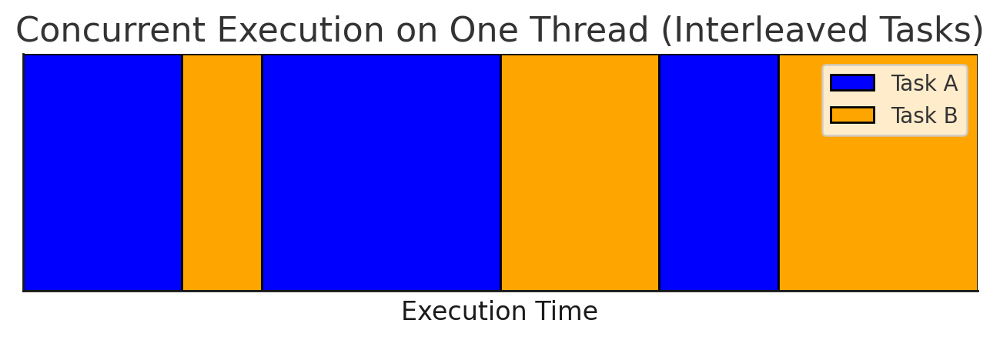

Async Python Pitfalls
Async Python is great - until you get to the point where it's not. And when it fails, it fails hard. One accidental blocking call is all it takes to freeze your entire application.
Danger of Accidental Blocking Call
It's easy to inadvertently introduce blocking calls into async code, which can freeze your entire application.
We often rely on third-party libraries, but we can't vouch for every single one of them, assuming they're truly async-safe. I learned this the hard way when a poorly written library caused a nightmare production issue. I spent a week on debugging why my FastAPI server, which relied on async endpoints, suddenly became unstable.
Unbeknownst to me, one of the libraries I used had a hidden flaw: when a database connection dropped, it would block the coroutine for an extended period, effectively freezing the entire async loop.
The worst part is that when the app locks up like that, it becomes completely unresponsive. No logs, no errors - just silence. You can't even see what's going on or check where it's stuck because it's not responding! Even health checks stop working, triggering endless restarts in Kubernetes. Debugging was a nightmare. Once you experience this, you'll never look at async Python the same way again. That's why I avoid async Python whenever I can.
Async Chunk Size
Many Python developers might not realize how crucial it is to control the size of async chunks.
Async Python executes code in small chunks, moving from one await keyword to another.
The event loop resumes a coroutine until it encounters an await,
which is the only point where control can be handed back to the loop,
allowing it to process other coroutines.

In an async Python loop, coroutines execute sequentially in small alternating chunks.
The concurrency model in async Python resembles cooking two dishes at once: frying meat and cooking rice. While two tasks are ongoing, you can only focus on one at a time. You switch between preparing the meat and stirring the rice, giving the illusion of doing two things at the same time.
But if one task consumes your attention for too long, the other suffers - you'll end up with overcooked rice.
As developers, we must ensure that async chunks are as short as possible. Only then can async Python function properly.
Coroutine Timeout Trap
Here's a surprising pitfall. Imagine using a poorly written library that blocks a coroutine for an extended period:
async def cant_stop_me():
time.sleep(10) # Should use: await asyncio.sleep(10), but we can't change it
To prevent a deadlock, you might try using this seemingly promising
asyncio.timeout:
import asyncio
import time
async def cant_stop_me():
time.sleep(10)
async def main():
async with asyncio.timeout(1):
await cant_stop_me()
asyncio.run(main())
Wrong! The function still runs for 10 seconds, ignoring the timeout.
Why? Because time.sleep(10) is a blocking call. Once Python hands control to a coroutine,
it won't return to the event loop until the coroutine voluntarily yields control.
Since it never does, the timeout mechanism is powerless.
This sounds silly as you think about it: to interrupt the unresponsive coroutine, the async loop first waits for it to become responsive.
If you call a synchronous function in an async thread, it will block, and there's nothing you can do. Any kind of cancelling the coroutine won't work here, because there's only one thread in asyncio, and this single thread is now fully occupied by the busy coroutine. So Python kindly waits until the naughty coroutine let go of the control. It's hopeless.
A proper solution is to offload blocking calls to a separate thread using
asyncio.to_thread
and await it asynchronously, preventing the main async loop from being blocked:
import asyncio
import time
def cant_stop_me():
time.sleep(10)
async def main():
try:
async with asyncio.timeout(1):
await asyncio.to_thread(cant_stop_me)
except TimeoutError:
print('Timeout')
asyncio.run(main())
Cancelling Coroutine
You might assume asyncio.Task.cancel
can reliably terminate a coroutine. Unfortunately, that's not always true.
import asyncio
import time
async def cancel_me():
time.sleep(10)
async def main():
task = asyncio.create_task(cancel_me())
await asyncio.sleep(1)
task.cancel()
try:
await task
except asyncio.CancelledError:
print("Cancelled")
asyncio.run(main())
Why? Because the event loop runs on the same thread as the blocked coroutine, and nothing can interrupt it.
Async Python alternates its execution between two things: an active coroutine and an async loop supervisor. If a coroutine won't give up control, the async loop never gets the chance to decide what to process next or to cancel the busy coroutine.
The problem with async Python is that it's too naive and it puts too much trust in the coroutines underneath, which is a bold assumption. Something takes longer than usual and the whole app goes unresponsive. Very risky.
Again, the cure is to wrap it in a separate thread:
import asyncio
import time
def cancel_me():
time.sleep(10)
async def main():
task = asyncio.create_task(asyncio.to_thread(cancel_me))
await asyncio.sleep(1)
task.cancel()
try:
await task
except asyncio.CancelledError:
print("Cancelled")
asyncio.run(main())
Async Endpoints
Imagine running an async FastAPI server on Kubernetes with liveness probes checking server health periodically:
app = fastapi.FastAPI()
@app.get('/live')
async def live_endpoint():
return {'live': True}
@app.post('/api/call')
async def heavy_endpoint():
return await long_computation()
The default timeout for a liveness probe in Kubernetes is 1 second, meaning your app must respond within that time. Otherwise, it's going to be killed by Kubernetes. For multithreaded apps, this isn't an issue - lightweight health checks can run independently regardless of load.
The problem begins with async Python. To give a live endpoint a chance to be processed while the server is busy, you must ensure that every async chunk lasts no longer than one second. How can you be sure of this? Are you aware of this when writing async Python code? Suddenly, you spend considerable time answering questions like:
- What's the time complexity of this function?
- How long will it run on production data?
- How large will the input be? What's the worst case?
- How fast are the CPUs on the server?
- Should I divide the code into functions according to their execution time, adding more
awaitkeywords? - What if there are many concurrent requests? Now, our coroutine and all the preceding, scheduled coroutines must fit in a 1-second chunk. How many concurrent requests do we expect?
Now, think about multithreading, where you don't have such problems. Or think about the Go programming language, where its fabulous concurrency works like a charm without such concerns.
Again, multithreading will save you.
Fortunately, FastAPI also supports "classic", synchronous endpoints that run in a thread pool.
Simply switch from async def to def endpoints:
app = fastapi.FastAPI()
@app.get('/live')
def live_endpoint():
return {'live': True}
@app.post('/api/call')
def heavy_endpoint():
return long_computation()
Multithreading as a cure
Every time we encountered blocking issues, the fix was multithreading:
- Switching FastAPI endpoints from
async deftodefand let them run in a thread pool - Using
asyncio.to_threadto offload blocking calls
But if we're going to use multithreading everywhere, what's the point of using asyncio anyway? What was wrong with good old multithreading? And now, with Python 3.13 free-threading, it's even more debatable. While async Python has benefits, it also comes with serious risks:
- Accidental Blocking Calls - inadvertent blocking call can freeze your entire application.
- Steep Learning Curve - Requires deep understanding of event loops, coroutines. By the way, do you know the difference between Coroutine, Task, and a Future?
- Increased Code Complexity
- Debugging Challenges
- Error Handling
Key Takeaway
To recap, the best practice working with async Python is to follow this rule of thumb:
- Use
async/awaitonly when operations complete in no time (constant complexityO(1)). - For higher complexity tasks (e.g. loops), offload them using
asyncio.to_thread.
I love Python. asyncio is useful, especially for MicroPython on microcontrollers where threads don't exist. But for large applications? Its cooperative multitasking model is a risky bet.
I don't believe in asyncio. I trust that the widespread adoption of free-threaded Python will make Python stronger.
Appendix 1: Async-Sync Context
If you struggle with switching between async and sync worlds, here's a quick reference:
-
Running an async function in a sync context:
async def fun(args): return args def main(args): result = asyncio.run(fun(args)) -
Running a sync function in an async context (without blocking the async loop):
def fun(args): return args async def main(args): result = await asyncio.to_thread(fun, args) -
Running an async function in an async context:
async def fun(args): return args async def main(args): result = await fun(args) -
Running a sync function in a sync context:
def fun(args): return args def main(args): result = fun(args)
Appendix 2: Async FastAPI with background task
#!/usr/bin/env -S uv run --script
# /// script
# dependencies = [
# "fastapi==0.115.11",
# "uvicorn==0.34.0",
# ]
# ///
import asyncio
from fastapi import FastAPI
import uvicorn
async def main():
background_task = asyncio.create_task(background_looper())
app = FastAPI()
config = uvicorn.Config(app, host="0.0.0.0", port=8000)
server = uvicorn.Server(config)
try:
await server.serve()
finally:
background_task.cancel()
async def background_looper():
while True:
print('background task execution')
await asyncio.sleep(5)
if __name__ == '__main__':
asyncio.run(main())
Appendix 3: Serving WSGI with FastAPI
#!/usr/bin/env -S uv run --script
# /// script
# dependencies = [
# "fastapi==0.115.11",
# "uvicorn==0.34.0",
# "prometheus-client==0.21.1",
# ]
# ///
import asyncio
from typing import Callable, Awaitable
from fastapi import FastAPI
from fastapi.middleware.wsgi import WSGIMiddleware
from prometheus_client import make_wsgi_app
from prometheus_client.core import REGISTRY
from starlette.types import ASGIApp, Receive, Scope, Send
import uvicorn
class AsgiDispatcher:
"""Forward requests to different ASGI apps based on the request path"""
def __init__(self, patterns: dict[str, ASGIApp], default: ASGIApp, on_startup: Callable[[], Awaitable[None]] | None = None):
self.patterns = patterns
self.default_app = default
self.on_startup = on_startup
async def __call__(self, scope: Scope, receive: Receive, send: Send) -> None:
if scope['type'] == 'lifespan' and self.on_startup is not None:
message = await receive()
if message['type'] == 'lifespan.startup':
await self.on_startup()
await send({'type': 'lifespan.startup.complete'})
return
if message['type'] == 'lifespan.shutdown':
logger.debug('ASGI shutdown event')
app = None
request_path = scope['path']
for pattern_prefix, pattern_app in self.patterns.items():
if request_path.startswith(pattern_prefix):
if scope['type'] in {'http', 'websocket'}:
app = pattern_app
break
if app is None:
app = self.default_app
await app(scope, receive, send)
async def main():
app = FastAPI()
metrics_app = make_wsgi_app(REGISTRY)
dispatcher = AsgiDispatcher({
'/metrics': WSGIMiddleware(metrics_app),
}, default=app)
config = uvicorn.Config(dispatcher, host="0.0.0.0", port=8000)
server = uvicorn.Server(config)
await server.serve()
if __name__ == '__main__':
asyncio.run(main())